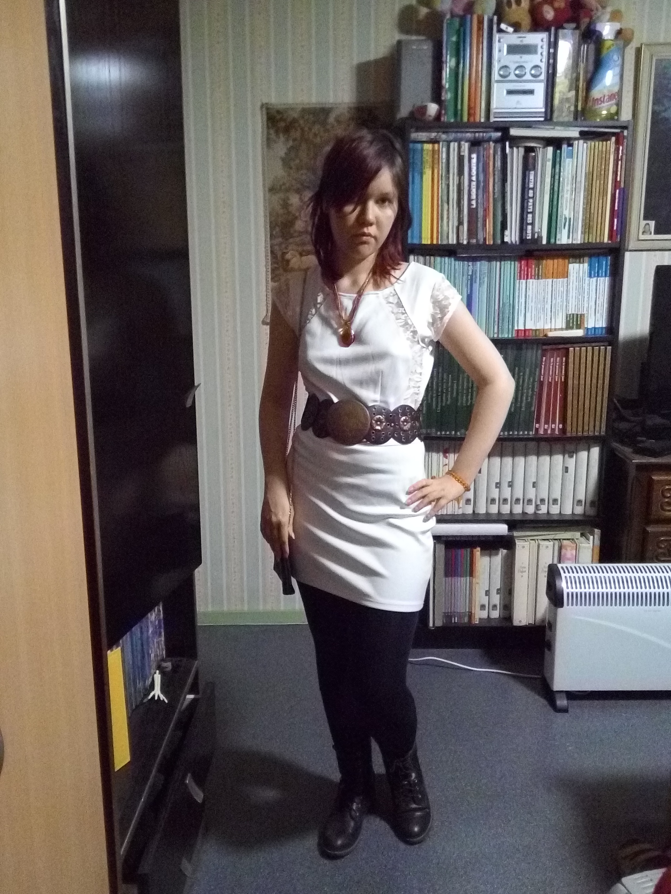

Vidéo : New_Body
Intro
Dans le cadre de l'atelier, il m'a été demandé d'imaginer un projet artistique tel qu'il soit impossible pour moi de le réaliser, que ce soit par manque de matériel existant, de technologie avancée ou en terme de financement. C'est ce qu'on appelle un projet
Mais voir grand, ce n'est pas uniquement la taille physique, ça peut aussi être quelque chose d'ambitieux. C'est le cas dans mon projet
Plusieurs études et recherches sont menées dans le but de copier les facultés du cerveau dans un ordinateur, mais même l'ordinateur le plus puissant que nous ayons mis au point ne suffit pas à ne serait-ce que stocker un court souvenir humain de quelques secondes, même si Randal Koene
Mon projet n'est pas, à l'instar beaucoup de chercheurs à l'heure actuelle, de perfectionner encore et encore les Intelligences Artificielles afin des les adapter à un corps robotique. Il existe déjà des recherches à ce sujet, mais il en existe peu qui ont pour but de transformer véritablement l'humain en machine. Les IA restent des machines, quand bien même leur intelligence serait supérieure, ce fait ne change pas. Perfectionner l'humanité, la rendre aussi durable qu'une machine, c'est là mon but dans le projet
Parties
Pour l'atelier d'Arts Numériques, je compte réaliser le site factice de la compagnie
Aussi, un dossier de presse d'une dizaine de pages servira de préparation à une conférence fictive. Ce dossier contiendra toutes les données du projet, des annonces d'événements en lien avec la compagnie, les dates importantes à la réalisation du projet comme le lancement du projet ou les compagnes d'action, une présentation du groupe de recherches et des responsables de la compagnie, un synopsis du projet, tout les sponsors et partenaires, quelques mots des parrains et marraines de l'événement, le planning de la conférence ainsi que le nom des intervenants, ... Ce dossier de presse aura également sa propre page dédiée sur le site de la compagnie.
Dossier de presse
Conférence de presse
Ces quelques points seront importants lors de l'enregistrement de la conférence de presse :
Pendant la conférence :
15-20 minutes de "discours" Dynamique, vivant S'appuyer sur des chiffres parlants S'appuyer sur une mise en scène (powerpoint, diagrammes, mais pas trop d'infos) Langage corporel : jamais tourner le dos aux journalistes + pointeur laser Après discours : questions réponses de plus en plus pointues Mettre fin à la réunion
Qui ?
Qui présente ? Combien de conférenciers ? (en général : président de l'association + chargé de communication /+/ quelques experts) Pour cette introduction, il y aura 6 intervenants : la représentante du projet (RP) la chargée de communication (CC) une experte en robotique (ER) trois personnes ayant déjà réaliser la transition vers un New Body (NB, NB2, NB3)
Journalistes :
minimum 3 (à voir plus tard, je me concentre d'abord sur les conférenciers)
Personnalité :
une personnalité à qui on donne la parole pour attirer les journalistes.Comme écrit plus haut, il ne s'agira pas ici d'une personnalité, mais d'un New Body qui parlera de son expérience en tant que "humain robot".
Pour être certaine d'avoir une vidéo présentable, j'ai décidé de couper ce projet vidéo en plusieurs parties, que je réaliserais les une après les autres. Ainsi, si par manque de temps je ne peux pas réaliser les parties suivantes, j'aurais quand même le début du projet.
Le plus important pour ce projet étant la partie d'introduction, c'est-à-dire le discours du représentant de New Body assisté de plusieurs experts qui ont contribué au projet, de plus que la présentation d'un New Body lui-même.
Story-board
RP [son regard balaie la salle, l'air sûre d'elle] : New Body [pause], le corps parfait qui changera vos vies. Ce corps sans défaut est entièrement personnalisable, vous pouvez enfin avoir l'apparence dont vous avez toujours rêvé. Fini, les maladies. Fini, les blessures. Fini, les handicaps. Fini, la vieillesse. Fini, la mort. Toutes ces défaillances de l'être humain n'ont plus lieues d'être.
CC [en regardant une personne différente à chaque question, l'air amicale]: Pourquoi accepter d'être malade ? Les maladies vous empêchent de socialiser. Pourquoi accepter d'être blessé ? Les blessures n'apportent que souffrances inutiles. Pourquoi accepter d'être handicapé ? Le handicap est un frein à votre mobilité et à votre agilité. Pourquoi accepter la vieillesse ? La vieillesse n'est que la preuve que vous mourrez tous peu à peu. Pourquoi accepter la mort ? La mort est la fin de votre existence, peu importe ce que vous avez réalisé de votre vivant, la mort y met un terme. Vous n'êtes rien après la mort, juste une coquille vide, sans âme, sans vie, sans intelligence.
RP : New Body, le corps parfait qui permet d'éviter la mort et l'oubli, la vieillesse et la souffrance, les maladies et la solitude. Imaginez un corps solide, durable, immortel. Imaginez un corps dont vous avez choisit vous-même chaque détail. Un corps que vous avez créer. Vous êtes les créateurs de vos nouvelles enveloppes corporelles. Vous êtes les maîtres absolus de votre aspect physique.
ER [l'air sérieuse] : Ne laissez plus l'ADN décider de votre apparence. Cette époque est révolue. L'infiniment petit n'a plus d'emprise sur nous. Prenons le contrôle complet de nos vies. Devenons maîtres de nos corps. L'espèce humaine doit avancer vers son amélioration, afin de palier à ses défauts naturels. Chaque être humain est né défectueux. Ne restons plus défectueux, nous pouvons devenir meilleurs, nous pouvons devenir parfaits.
CC : New Body, le corps parfait qui vous permet de devenir parfait. Cette perfection que nous créons vous est accessible. Cette technologie n'est pas hors de portée. Cette technologie n'est pas hors de prix. La transition vers un New Body est entièrement prise en charge par notre gouvernement. Les mieux lotis ne sont pas les seuls à pouvoir prétendre à la perfection. Les démunis ne sont pas laissés pour compte.
RP : Venez tous, venez obtenir la perfection que vous attendiez. Venez obtenir le corps dont avez toujours rêvé. Rien ne vous en empêche. N'ayez aucune crainte car la transition est sûre, sans douleur, sans difficulté. Pour vous le prouver, un de nos partenaires s'est laissé tenté par cette transition. Rencontrez les premiers New Body !
NB : Bonjour, mon nom est Claire, et j'ai choisit d'obtenir un New Body. Si j'ai réalisé cette transition, c'est dans le but de prolonger mon existence. Pouvoir vivre aussi longtemps que cette technologie sophistiquée le permet est pour moi un soulagement. J'ai à présent autant de temps que je le désire pour accomplir mes rêves. Je pourrait être témoin de l'évolution humaine, je ne manquerai rien de ce que l'avenir a à offrir.
NB2 : Bonjour, je suis Gwen, je suis médecin sans frontières. Échanger mon corps contre un New Body est un avantage dans mon travail. Je peux à présent voyager à travers le monde sans crainte de coups de soleil, des morsures du froid, de l'humidité. Je n'ai plus à avoir peur des animaux, ils ne peuvent plus me faire le moindre mal. Mais surtout, je peux soigner mes patients sans tomber malade à mon tour. Mes mains ne tremblent plus quant j’opère. Ma vision ne se trouble plus. Je peut en plus de ça moduler mon apparence quand je le désire pour mieux m'intégrer dans les sociétés que je veux aider.
NB3 : Mon nom est Justine, et j'ai choisit de participer à ce projet pour que mon corps soit enfin comme je le désirais. J'ai toujours eu de gros complexes sur mon physique. Un nez trop volumineux, des yeux trop petits, des cheveux gras. Un corps trop grand et trop gras. Je n'étais pas féminine, je n'étais pas jolie. En choisissant mon apparence dans ce nouveau corps, je peux enfin être celle que j'ai toujours voulu être.
CC : Avez-vous des questions ?
Essais de costumes
J'ai essayé plusieurs tenues pour les divers personnages que je vais incarner. J'ai également changé de coiffure et d'accessoires, ainsi que de chaussures, tout en prenant une pose, une posture différente à chaque personnage. J'ai essayé de donner un caractères différent à chacun d'eux, prenant tantôt l'air sérieux, tantôt l'air timide, ...
Personnage 1 Claire, intellectuelle, New Body 1
{kind=link}
Personnage 2 Gwen, médecin sans frontières, New Body 2
{kind=link}
Personnage 3 Justine, New Body 3
{kind=link}
Personnage 4 Journaliste artistique
{kind=link}
Personnage 5 Journaliste mode
{kind=link}
Personnage 6 Journaliste scientifique
{kind=link}
Personnage 7 Opposition religieuse
{kind=link}
Personnage 8 Experte en robotique

Personnage 9 Chef de projet
{kind=link}
Personnage 10 Directrice marketing
{kind=link}